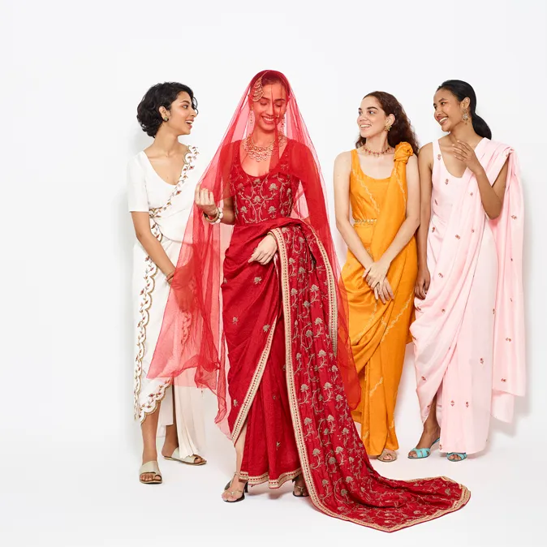

Indian culture, often labelled as a combination of several cultures
Indian culture, often labelled as a combination of several cultures, has been influenced by a history that is several millennia old, beginning with the Indus Valley Civilization and other early cultural areas.
Indian Culture
Many elements of Indian culture, such as Indian religions, mathematics, philosophy, cuisine, languages, dance, music and movies have had a profound impact across the Indosphere, Greater India and the world.

Clothing
Traditional clothing in India greatly varies across different parts of the country and is influenced by local culture, geography, climate, and rural/urban settings. Popular styles of dress include draped garments such as sari and mekhela sador for women and dhoti or lungi or panche (in Kannada) for men. Stitched clothes are also popular such as churidar or salwar-kameez for women, with dupatta (long scarf) thrown over shoulder completing the outfit.

The salwar is often loose fitting, while churidar is a tighter cut. The dastar, a headgear worn by
Sikhs is common in Punjab.Indian women perfect their sense of charm and fashion with makeup and ornaments. Bindi, mehendi, earrings, bangles
and other jewelry are common. On special occasions, such as marriage ceremonies and festivals, women may wear cheerful colours with various
ornaments made with gold, silver or other regional stones and gems. Bindi is often an essential part of a Hindu woman's make up. Worn on their
forehead, some consider the bindi as an auspicious mark.
Traditionally, the red bindi was worn only by married Hindu women, and coloured bindi
was worn by single women, but now all colours and glitter have become a part of women's fashion. Some women wear sindoor → a traditional red or
orange-red powder (vermilion) in the parting of their hair (locally called mang). Sindoor is the traditional mark of a married woman for Hindus.
Single Hindu women do not wear sindoor; neither do over 1 million Indian women from religions other than Hindu and agnostics/atheists who may be married.
The make up and clothing styles differ regionally between the Hindu groups, and also by climate or religion, with Christians preferring Western and
Muslim preferring the Arabic styles. For men, stitched versions include kurta-pyjama and European-style trousers and shirts.
In urban and semi-urban centres,
men and women of all religious backgrounds, can often be seen in jeans, trousers, shirts, suits, kurtas and variety of other fashions.
Dance
The two major dance forms in India are Classical and Folk dance. The major difference between classical and folk dance is the origin. Classical dance has a deep-rooted relationship with the Natya Shastra where the specific features of each of the classical dance forms have been mentioned. Folk dance on the other hand, emerged from the local tradition of the respective state, ethnic or geographic regions.


Basic Elements of Classical Dance:
The Natya Shastra written by Bharat Muni is the most prominent source for establishing the characteristics of the dances.
There are two basic aspects of classical dance
→ Lasya - It denotes grace, bhava, rasa and abhinaya. It is symbolic to the feminine feature of dance as an art form.
→ Tandava - This is symbolic to the male aspects of dance and has more emphasis on rhythm and movement.
There are three basic elements of classical dance in the Indian culture
→ Nritta - These are the basic dance steps and are performed rhythmically but
devoid of any expression or mood.
→ Natya - It means dramatic representations and refers to the story that is
elaborated through the dance recital.
→ Nritya - It refers to the sentiment and the emotions evoked through dance.
It
includes the mime and the different methods of expression including mudras in
the dance.
The Guru-Shishya paramapara forms the core of the Indian classical dance
forms. The basic meaning is that each dance form is related to a Guru (teacher)
and he/she transfers that knowledge of dance to a Shishya (Student).
The 8 basic technicalities that are expressed in the classical dance →
Shringer (Love), Hasya (Humorous), Karuna (Sorrow), Raudra (Anger), Veer
(Heroism), Bhayanak (Fear), Bibhats (Disgust), Adhbhut (Wonder).
Various classical dances in India are Bharatanatyam (Tamil Nadu), Kathak
(Uttar Pradesh), Kuchipudi (Andhra Pradesh), Odissi (Odisha), Kathakali
(Kerala), Sattriya (Assam), Manipuri (Manipur), Mohiniyattam (Kerala).
Cinema
The word Cinema is a short form of cinematography. t refers to the art of
filmmaking. Various era of Indian cinema - Following are the eras of Indian
cinema-
→ Early Indian Cinema (1898 to 1945)-
Age of Silent Films- The earliest films were silent films. The dialogues
delivered by act not audible to viewers because technology was not advanced
enough to record both visuals and audio simultaneously. The plot used to be
told through writings using title cards. These silent films were not completely
silent. They were accompanied by live sounds. A small orchestra used to play
music during the films as per the nature of scene.
Age of Talking Films or Talkies - With the start of 1930s, a new era of
talkies commenced in Indian cinema. Talkie was a sound film or a motion
picture having synchronized sound. The first talkie in India was Alam Ara. This
release set a new trend and regional talkies also started after Alam Ara.
→ Golden era of Indian Cinema (1940 to 1960)-
In the late 1940s, Indian cinema picked up the new masala themed films
depictng music, dance and romance. This era was led by directors like Guru
Dutt, Raj Kapoor, Bimal Roy and Mehboob Khan. They brought new depth to
the themes prevalent in India. This era laid the foundation stone of Indian
cinema inspiring generations of filmmakers. With the Independence of India in
1947, a statutory body was created by enacting the Cinematograph Act in 1952
with the name of Central Board of Film Certification (CBFC). It was placed
under the Ministry of Information and Broadcasting.
→ Classic decades of Indian Cinema (1970s and 1980s)-
The films of this phase were characterized by a mixture of genre of romance
and action. This phase was dominated by filmmakers like Ramesh Sippy,
Hrishikesh Mukherjee and Vijay Anand. Ionic films like Zanjeer and became
huge commercial success and went on to become trendsetters in Indian cinema.
The term Bollywood was coined during the 1970s with the establishment of
Conventions of Commercial Bollywood Films (CCBF).
→ New Bollywood phase of Indian Cinema (1990s to Present)-
During the late 1980s, Indian cinema faced a face of stagnation because of
increasing use of violence, issues related to quality of music and rise in cases of
video theft. With the release of Yash Chopra's epic film Chandni, Indian cinema
rejuvenated itself and an era of romance stated. The beginning of the 21st
century marked commencement of an era of technological evolution. The new
technology, advancement in terms of animation, special effects, digital
projectors, latest production techniques, etc., improved the quality of Indian
films and increased its popularity among the masses.
Music
Indian music consist of
→ Shruti-
Commonly refers to musical pitch. It is the shortest interval of pitch
that human cars can detect and a musical instrument or singer can produce.
According to Natya Shastra, there are 22 shruti.
→ Swara -
It refers to type of musical sound that is a single note, which define a
relative position of a note, rather than a defined frequency. There are 7 swaras
in the form of Sa, Re, Ga, Ma, Pa, Dha, Ni. These 7 swaras are related to sounds
of certain birds and animals.
→ Raga-
A raga prescribes a set of rules for building a melody. It is
characterized by a combination of notes picked out of the total 22 shruti. Ragas
involve arrangement of swaras in different sequences. All the ragas are
categorized in such a way that there will be in increasing Theatre decreasing
order of swaras. Following are some important ragas.
→ Raga Bhairav-It is a morning raga.
→ Raga Marwa- It is sung during late afternoon hours till sunset
→ Raga Pahadi - It is an evening raga.
→ Raga Yaman - It is an evening raga. It is sung from sunset till late evening.
→ Raga Jog- It is sung after midnight in the wee hours of morning.
→ Raga Malhar - It is associated with rain.
→ Raga Deepak - It is associated with fire.
→ Tal-
Tal refers to the beat set for a particular composition (a measurg of
time). It is a sequence of beats performed by singers using hands and fingers at
fixed time cycles. These rhythmical cycles vary from 3 to 128 beats. Tal is
intricately related to Laya which refers to a repetitive nature of any activity.

Others
→Fair and Festivals:
People in India celebrate their religious and cultural occasions by organizing
cultural activities in the form of fairs and festivals, Every Indian State and
socio-cultural group has its unique traditions which reflect in their celebrations.
People use folk music, dances and order forms of entertainment to enjoy these
important occasions. Vibrant, fascinating and beautiful Indian fairs and festivals
reflect the cultural strength and diversity of India. Indian festivals can be
broadly divided into 3 categories → national or political, religious and
economic. Most Indian festivals are connected to seasons and economic
activities. Fairs and festivals help in breaking the monotony of life.
Cultural
activities organized on these occasions invigorate everyone. Economic activities
get a boost because artisans and craftsmen set up their stalls to sell their
products at fairs. These occasions also give boost to tourism because they attract
millions of tourists every year. The voice of Indian heritage and is carried by
these celebrations beyond Indian boundaries. Festivals are secular as well as a
religious in nature.
Festivals such as Independence Day and Republic Day are
examples of secular festival. Holi, Diwali, Chhath and Onam etc are examples
of religious festivals.
Major religious festivals celebrated in India are Holi, Maha Shivratri, Diwali,
Navaratri, Vinayaka Chaturthi, Guru Purnima, Thai Pongal, Raksha Bandhan,
Vasant Panchami, Karva Chauth, Baisakhi, Buddha Purnima, Janmashtami,
Christmas, Ramzan, Muharram, Easter etc.
Important fairs of India are Kumbha Mela, Pushkar Mela, Kullu Mela, Rath
Yatra of Puri, Holla Mohalla, Urs of Ajmer Sharif, Goa Carnival etc.


→ Painting:
The tradition of paintings has been carried on in the Indian subcontinent since
the ancient times. With time, Indian classical paintings evolved to become a sort
of blend of the various traditions influencing them. Indian paintings provide on
aesthetic continuum that extends from the early civilization to the present day.
In the beginning Indian painting was essentially religious in purpose. But as
year passed, Indian painting became a fusion of various culture and traditions.
During the colonial era, Western influences started to make an impact on Indian
art. By the time of Independence in 1947, several schools of art in India
provided access to modem techniques and ideas. Galleries were established to
showcase these artists. Indian are got a boost with the economic liberalization of
the country since early 1990s. Artists from various fields started bringing in
varied style of work post liberalization. Indian art thus works not only within
the confines to academic traditions but also outside it.
Classification of Indian paintings-
→ Mural Paintings - Murals are large works executed on the walls of solid
structures directly.
→ Miniature Paintings - They are executed on a very small scale for the books
or albums on perishable material such as paper and the cloth.